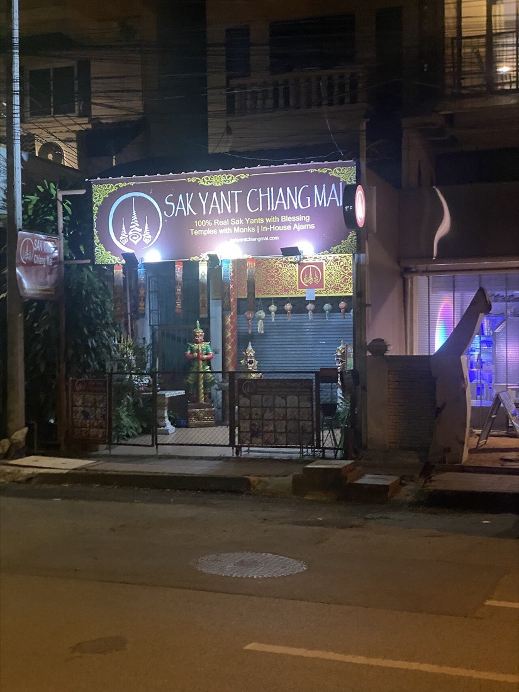

📷 Immanuelleสักยันต์-รอยสัก · Tattoo & Sak Yant (31)
สักยันต์ · Sak Yant 🐜 · ร้านสักสมัยใหม่ · Modern studios (31) · เจาะ · Piercing 🐜 · ลบรอยสัก · Removal 🐜
— ผู้สนับสนุน · sponsor —สวนอาหาร Garden Restaurant — 69 ถนนลอยเคราะห์ · เบียร์เย็นจัด ส้มตำอร่อยที่สุดในเมือง · บอกว่าแนนส่งมาเจ้า · Garden Restaurant — 69 Loi Kroh Road · ice-cold beers, the best som tam in town · tell them Nan sent you!ลงโฆษณาที่นี่ · advertise here
🐜 = ข้อมูลที่มีแล้ว เต็มที่ ๙ ตัว — ชื่อไทย ชื่ออังกฤษ เบอร์ LINE เวลาเปิด เว็บ รูป เจ้าของยืนยัน และมดเพิ่งไปเดิน · ข้อมูลคืออำนาจ เติมให้ครบได้ฟรี · 🐜 = one ant per fact we hold, nine when a listing is complete — Thai name, English name, phone, LINE, hours, a live website, a photo, owner-confirmed, recently walked. Information is power; filling it in is free.
- Artisan Ink Tattoo🐜4
- Bambi tattoo🐜1
- Bloodline Tattoo🐜1
- Bnana tattoo🐜1
- CNX INK🐜1
- Celebrity Ink™ Tattoo Studio Chiang Mai🐜4
- Dejavu Tattoo🐜1
- Forever🐜1
- Ganesha🐜2
- Gao Yord Tattoo🐜2
- JS Tattoo🐜1
- Jin Bamboo Tattoo🐜1
- Leo on Ink🐜2
- Line Point Bamboo Tattoo🐜2
- MeingPing Ink🐜1
- Mornzter Tattoo Studio🐜1
- Panumart Tattoo🐜2
- Sak Yant Chiang Mai🐜4
- Sak Yant Tatoo Chiang Mai🐜4
- Sideroad Tattoo🐜1
- Skill Tattoo Studio🐜1
- Solitary🐜1
- TTT Tattoo cafe🐜1
- Tattoo🐜1
- Tattoo Studio🐜1
- The 29 Tattoo Studio🐜1
- The Best Tattoo🐜3
- The Master Tattoo🐜2
- Warp Tattoo🐜3
- Xavier Ink.cnx🐜3
- หรรษา มินิกอล์ฟ · Hansa Minigolf🐜3
⬇ GeoJSON (31 จุด · points)